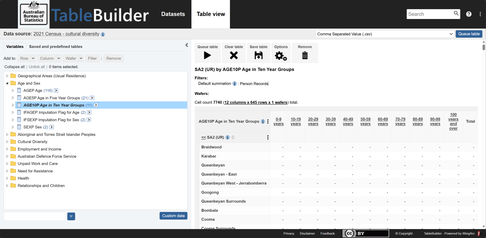
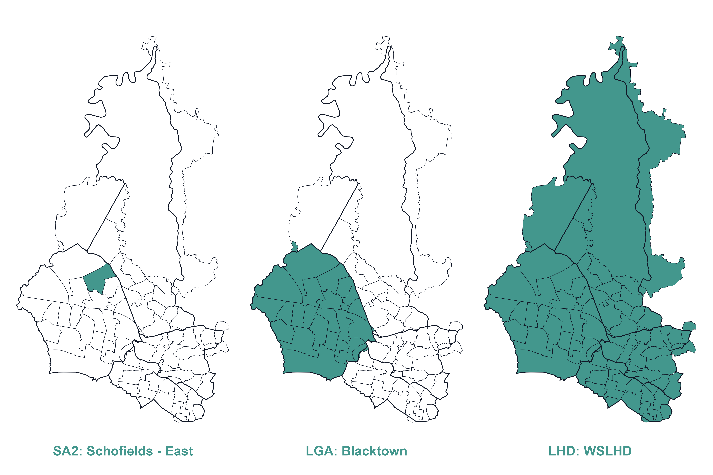
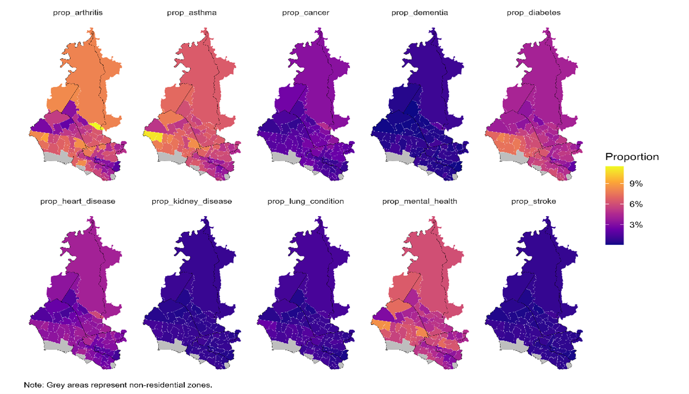
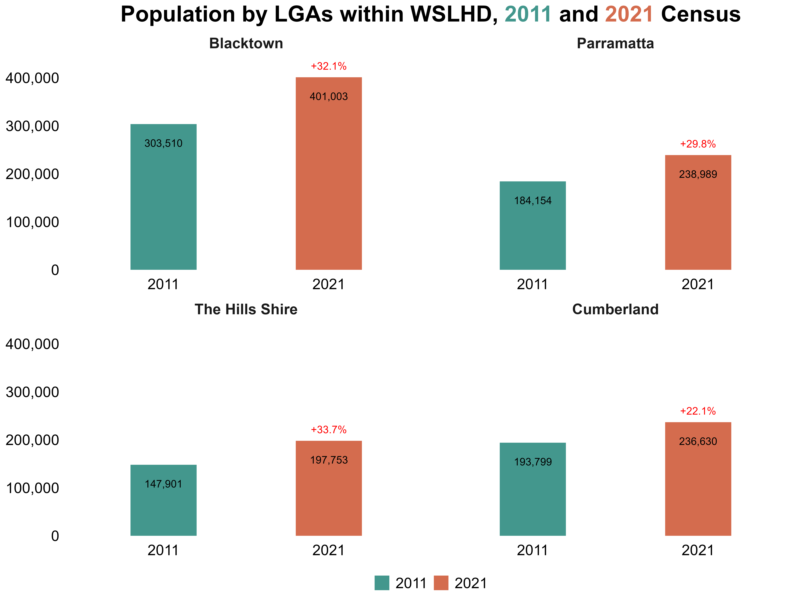
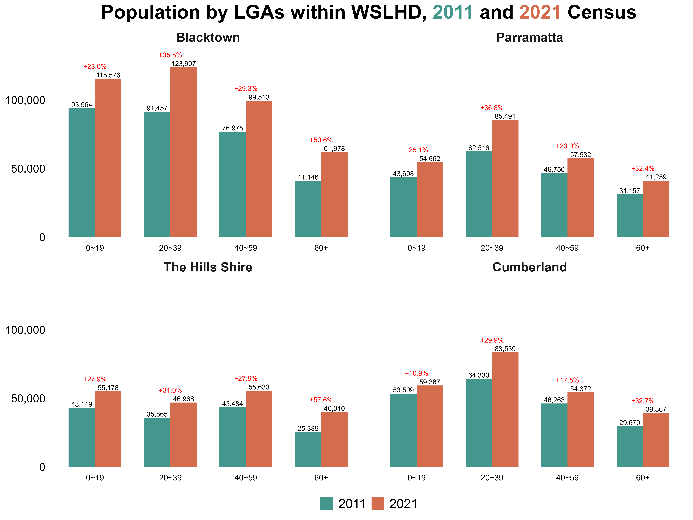
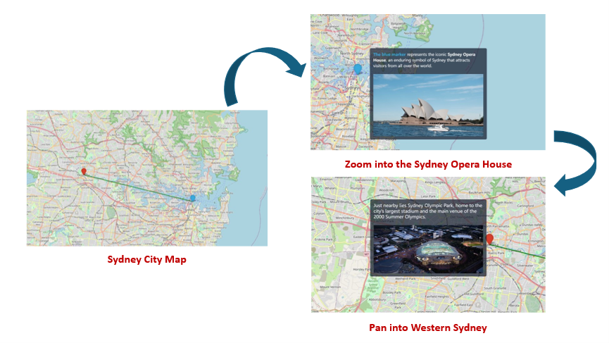
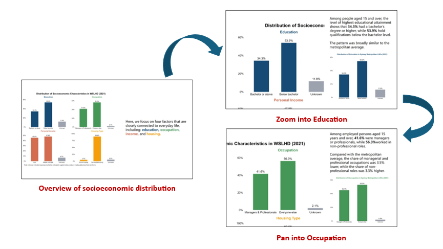
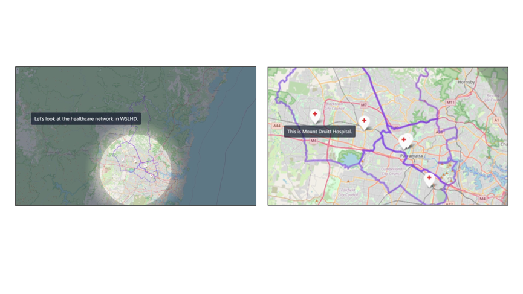
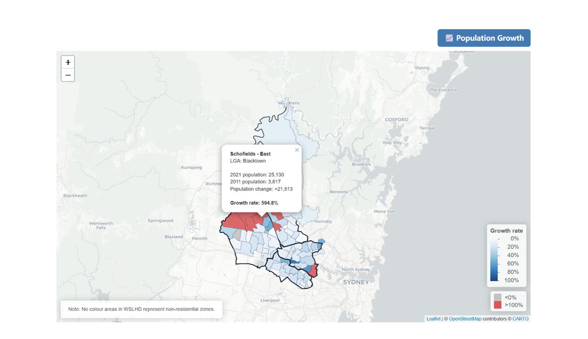

Show code
# Compute chained weight along each 2011→2016→2021 path
mutate(w_11_21 = w_11_16 * w_16_21)In New South Wales (NSW), Australia, six local health districts cover the Sydney metropolitan region [1], collectively delivering public health services to over six million residents, as shown in Figure 1. These include:
Figure 1. Sydney metropolitan LHDs.  Image Source: NSW Health
Image Source: NSW Health
WSLHD is a leader in clinical services in Sydney’s west [2], serving more than one million residents across four constituent Local Government Areas (LGAs): Blacktown, The Hills Shire, Cumberland, and Parramatta [2]. WSLHD is characterised by rapid population growth, cultural diversity, and wide socioeconomic variation. WSLHD population growth rate (10.3%) [3] was nearly double that of NSW (5.4%) [3] between 2020 and 2024. Half of residents were born overseas, and many postcodes within LGAs rank high on the socio-economic disadvantage scale [2]. Understanding the health and sociodemographic variation across the region is a key component to meet the healthcare needs of this large and diverse population.
Based on 2011 and 2016 Census data, the Social and Health Atlas [3] provides comprehensive tables that present key sociodemographic indicators in WSLHD, alongside 2016 geographical area maps. These resources established essential knowledge about population composition and socioeconomic characteristics across WSLHD. However, they don’t provide a structured narrative to help readers interpret the data. Also, the static tables and charts do not facilitate interactive exploration. The project utilises the scrollytelling technique to integrate narrative with dynamic visualisations and interactive exploration. These features enable readers to follow a coherent storyline, explore spatial patterns, and engage with the data.
The public needs to engage with population and health data because this interaction enables them to participate in community decisions through effective decision-making. The process of sharing intricate information with public audiences proves to be a challenge. The combination of storytelling with visualisation methods creates an excellent method to connect with different types of readers. Schröder et al. [4] demonstrated that storytelling with data visualisation has served as an essential method for interpreting global phenomena.
The traditional method of storytelling uses a reporting format that unites written content with visual elements. The text presents the story, and the images provide supporting evidence or related details [5]. However, the information in conventional reports becomes difficult for non-specialist readers to understand because the reports contain many statistics, dense tables and separate charts. Also, traditional reports typically lack interactive features, which restricts how readers can participate with the content. Schröder et al. [4] explained that allowing users to interact with visualisations provides a sense of control and encourages exploration, leading to a deeper understanding of data. The dashboard serves as a popular data visualisation tool that provides an interactive visual presentation through its concise design. Yet dashboards often sacrifice narrative for conciseness and interactivity, which limits the ability to convey the interpretation behind the data.
Scrollytelling is a long-form article frequently used in data-driven journalism. The term scrollytelling combines “storytelling” and “scrolling” [6]. The technique uses visual storytelling to present content that transforms automatically when users scroll through the material. Eric Mörth et al. [7] demonstrated that scrollytelling enables users to experience control and exploration through an interface that guides them toward a coherent experience. Scrollytelling combines narrative text, visual elements, and interactivity, providing readers with an immersive experience.
This project places WSLHD at the centre of the narrative and utilises the scrollytelling technique to present its health and sociodemographic profiles based on the 2011 and 2021 Census data. This project aims to communicate health data and engage a wide audience.
This project used data from the Australian Bureau of Statistics (ABS), where variables are organised according to geographical units. The analysis focused on 2021 as the main reference year, while 2011 serves as the baseline for analysing population changes across different spatial scales over the past decade. Although the 2021 Census data are now four years old at the time of writing, they remain the most recent and comprehensive source for understanding sociodemographic patterns.
The variables used in this project come from the 2011 and 2021 Australian Census data in TableBuilder (Figure 2) [8], including demographics, socioeconomics, and health conditions. The 2021 Index of Relative Socio-economic Disadvantage (IRSD) dataset comes from the Socio-Economic Indexes for Areas (SEIFA) [9] collection on ABS.
Figure 2. TableBuilder user interface.  Image Source: ABS TableBuilder
Geographical units used in this project include Statistical Areas Level 2 (SA2), LGA, and LHD levels, allowing comparison across different spatial levels. Figure 3 shows an example of the geographic hierarchy of SA2, LGA, and LHD.
SA2s represent small communities that interact socially and economically [10]. SA2s are the primary spatial unit for analysis.
LGAs represent administrative units governed by local councils [11]. This project includes 4 LGAs within WSLHD.
LHDs are health administration units defined by NSW Health. This project includes 6 metropolitan LHDs.
The geospatial boundary data come from the read_absmap() function from the R package strayr (v.0.1.7) [12], which provides access to official Australian statistical geography shapefiles.
Figure 3. Example of the geographic hierarchy: SA2, LGA, and LHD. 
Additionally, this project used the SA2 boundary correspondence files for 2016–2021 and 2011–2016 to construct a 2011–2021 SA2 correspondence (rationale refers to section: Population Growth). These two files come from the Australian Statistical Geography Standard (ASGS) Edition 3 [13] and ASGS Volume 1 [14].
Table 1 provides an overview of all data sources used in this project.
Table 1. Overview of data sources.
| Data | Year | Source | Description |
|---|---|---|---|
| Demographic | |||
| Age group | 2021, 2011 | TableBuilder | Age in ten-year groups |
| Country of birth | 2021 | TableBuilder | Country of birth of the person |
| Language used at home | 2021 | TableBuilder | |
| Socioeconomic | |||
| Education level | 2021 | TableBuilder | Level of highest educational attainment |
| Occupation | 2021 | TableBuilder | |
| Personal income | 2021 | TableBuilder | Weekly income |
| Housing type | 2021 | TableBuilder | Tenure and landlord type |
| IRSD | 2021 | SEIFA | |
| Health condition | |||
| Health condition | 2021 | TableBuilder | Selected health conditions in the Census survey |
| Geography | |||
| SA2 | 2021, 2011 | strayr |
|
| LGA | 2021, 2011 | strayr |
|
| LHD | 2023 | strayr |
|
| SA2 correspondence | |||
| 2016–2021 | ASGS Edition 3 | ||
| 2011–2016 | ASGS Volumn 1 |
Note. Selected health conditions in the Census survey include arthritis, asthma, cancer, dementia, diabetes, heart disease, kidney disease, lung condition, mental health, and stroke. strayr package provides only the 2023 LHD shapefile, so this boundary was used as the consistent reference for both 2011 and 2021 mapping. But this approach may not fully capture any minor historical boundary changes before 2023.
This project used RStudio (v.2025.05.0 + 496) as the primary computing software. R (v.4.5.1) and various open-source packages handled data wrangling and creating figures for the scrollytelling article. Table 2 lists the R packages used in this project, encompassing data wrangling, spatial analysis, and visualisation.
Table 2. Overview of R packages used in this project.
| Package | Description |
|---|---|
| Data Wrangling | |
readr |
Reads and writes CSV files. |
dplyr |
Provides data manipulation functions such as select(), mutate(), and filter(). |
tidyr |
Reshapes data between wide and long formats for analysis and plotting. |
rlang |
Supports tidy evaluation and dynamic programming within custom functions. |
stringr |
Handles string operations for cleaning geographic and categorical labels. |
forcats |
Manages factor levels for consistent categorical ordering. |
| Spatial Data Wrangling | |
sf |
Manages vector-based spatial data and performs geometry operations. |
strayr |
Provides Australian geographic data and standard spatial classifications. |
smoothr |
Provides tools to smooth, densify, simplify, and fix small geometry artefacts in sf objects. |
| Static Visualisation | |
ggplot2 |
Core package for static visualisation, including choropleth maps and bar charts. |
scales |
Formats legends and numeric values, such as percentages and deciles. |
ggtext |
Enables rich text within plot elements. |
ggrepel |
Prevents overlapping text labels in scatter plots and maps. |
biscale |
Creates bivariate maps with dual-colour scales. |
patchwork, cowplot |
Combines multiple plots into cohesive layouts. |
| Interactive Tools | |
leaflet |
Builds interactive web maps with zoom, hover, and filter functions. |
plotly |
Converts static plots to interactive charts with tooltips and dynamic legends. |
mapview |
Provides interactive previews of spatial layers, enabling zoom, pan, and clickable features. |
htmlwidgets |
Provides a framework to embed R visualisations into web pages. |
htmltools |
Manages HTML dependencies and custom UI elements. |
webshot2 |
Captures HTML widgets as static images for reports or summaries. |
The scrollytelling and dashboard outputs were built using Quarto, incorporating the closeread extension for the scrollytelling page and the dashboard extension for the dashboard page.
Quarto is an open-source publishing system that enables seamless integration of narrative text, code, and visualisations and supports the creation of interactive HTML documents [15].
closeread package is a Quarto extension designed specifically for scrollytelling. It enables smooth scrolling transitions, scene-based storytelling, and interactive elements that enhance user engagement with the data narrative [16].
dashboard package is a Quarto extension designed specifically for creating interactive dashboards. It can be used to customise layouts and use a wide variety of dashboard themes [17].
The front-end interface used HTML, CSS, and JavaScript to enhance visual presentation and user interactivity.
This stage focuses on preparing cleaned variables and mapping geography.
Table 3 summarises all tasks in variable cleaning, including the datasets used, the datasets created, and the scripts developed.
Table 3. Overview of the variable cleaning task.
| Variable | Used dataset | Created dataset | Script |
|---|---|---|---|
| Demographic | |||
| Age group | age_group_raw_2021.csv |
age_group_nsw_2021.csv |
age_group_2021.Rmd |
age_group_raw_2011.csv |
age_group_nsw_2011.csv |
age_group_2011.Rmd |
|
| Country of birth | cob_raw_2021.csv |
cob_nsw_2021.csv |
cob_2021.Rmd |
cobDetail_raw_2021.csv |
cobDetail_nsw_2021.csv |
cob2_2021.Rmd |
|
| Languages used at home | lang_raw_2021.csv |
lang_nsw_2021.csv |
lang_2021.Rmd |
langDetail_raw_2021.csv |
langDetail_nsw_2021.csv |
lang2_2021.Rmd |
|
| Socioeconomic | |||
| Education level | edu_raw_2021.csv |
edu_nsw_2021.csv |
edu_2021.Rmd |
| Occupation | occup_raw_2021.csv |
occup_nsw_2021.csv |
occup_2021.Rmd |
| Personal income | income_raw_2021.csv |
income_nsw_2021.csv |
income_2021.Rmd |
| Housing type | house_ty_raw_2021.csv |
house_ty_nsw_2021.csv |
housing_ty_2021.Rmd |
| IRSD | irsd_raw_2021.csv |
irsd_nsw_2021.csv |
irsd_2021.Rmd |
| Health condition | |||
| Condition type | cons_type_raw_2021.csv |
cons_ty_nsw_2021.csv |
cons_ty_2021.Rmd |
In TableBuilder, I organised each dataset with NSW SA2s as rows and variables as columns, then downloaded and saved them as CSV files. I applied a consistent naming convention for all raw datasets, using the structure “variable_raw_year”. For example, the age dataset was named age_group_raw_2021. After cleaning, the naming convention remained the same except that “raw” was replaced with “nsw”, with the year indicating either 2021 or 2011.
I then developed a cleaning script to clean and standardise the variables. The script applies a consistent cleaning workflow across all raw datasets, where only the variable name needs to be modified when processing a different variable dataset. For example, renaming age_group to cob (country of birth) in the cleaning script. The script performs the following key steps:
Removed descriptive lines at the head and tail of each CSV file that contain notes, retaining only the header and data rows.
Deleted the Total column and any aggregated summary rows to avoid double-counting during rate calculations.
Renamed the first column as sa2.
Saved the cleaned datasets under the naming convention.
Note: For the country of birth and language used at home, two datasets with varying levels of detail were utilised. The rationale for this decision is discussed in the Cultural Diversity section.
These cleaning steps ensure that all raw datasets are cleaned into a consistent structure, with redundancies removed, thereby preparing the data for reliable merging and downstream analysis. Figure 4 shows an example of a raw data file downloaded from TableBuilder and the corresponding cleaned dataset following the steps described above.
Figure 4. Example of a variable dataset before and after cleaning. 
The cleaning process of the IRSD dataset followed these steps. This dataset was prepared for socioeconomics and health analysis (see section: Socioeconomics and Health Profiles).
Extracted the raw IRSD data from the SEIFA dataset (Table 2 within the SEIFA release) using Microsoft Excel 365.
Removed the descriptive lines at the head and tail of the table in Excel and saved the cleaned table as a raw CSV file.
Because some SA2 names in the raw IRSD dataset were incomplete, I developed a script to replace them using the authoritative sa2_name_2021 values obtained through the read_absmap() function from the strayr package.
Saved the corrected dataset.
This stage covered two tasks: mapping SA2s to LGAs and LHDs, and mapping 2021 SA2s and 2011 SA2s. Table 4 summarises all tasks in geography mapping.
Table 4. Overview of the geography mapping task.
| Task | Used dataset | Created dataset | Script |
|---|---|---|---|
| Mapping 2021 SA2, LGA and LHD | read_absmap("sa22021")read_absmap("lga2021")read_absmap("nsw_lhd2023")wslhd_sa2_2021.csv |
sa2_lga_lhd_nsw_2021.csvsa2_lga_lhd_wslhd_2021.csv |
map_sa2_lhd_lga_2021.Rmd |
| Mapping 2011 SA2, LGA and LHD | read_absmap("sa22011")read_absmap("lga2011")read_absmap("nsw_lhd2023")wslhd_sa2_2011.csv |
sa2_lga_lhd_nsw_2011.csvsa2_lga_lhd_wslhd_2011.csv |
map_sa2_lhd_lga_2011.Rmd |
| Mapping 2011 and 2021 SA2s | CG_SA2_2011_SA2_2016.csvCG_SA2_2016_SA2_2021.csvsa2_lga_lhd_nsw_2021.csv |
sa2_corres_to_2021.csvsa2_corres_from_2011.csv |
map_sa2_2011_2021.Rmd |
I developed two parallel scripts (2021 and 2011) to map NSW SA2s to their corresponding LGAs and LHDs. When SA2 overlaps occurred in different LGAs or LHDs, I assigned each SA2 to the LGA or LHD with the largest area of intersection to maintain a one-to-one relationship between SA2, LGA, and LHD, and I saved two datasets for both years. For example, the SA2 “Toongabbie – West” lies mostly within Blacktown, with a smaller portion extending into Cumberland. So, it was classified under Blacktown LGA. Similarly, the SA2 “Dural – Kenthurst – Wisemans Ferry” spans both WSLHD and NSLHD, but because most of its area falls within WSLHD, it was assigned to WSLHD.
But this classifying approach leaves some partially covered SA2s unassigned to their overlapping LGAs or LHDs. For example, the SA2 “Eastwood” lies mostly within NSLHD, with only a smaller portion lying within WSLHD. To ensure that WSLHD fully captured all SA2s within its geographic extent, I applied an additional manual step using reference mapping lists. Specifically, SA2s that intersect WSLHD but were not assigned to WSLHD under the largest area rule were manually appended to the WSLHD mapping. This process resulted in two WSLHD-specific mapping datasets for both years, which were used in subsequent WSLHD-focused analyses to ensure that all SA2s within the WSLHD geographic coverage were included.
The SA2 boundaries changed between 2011 and 2021. For example, the 2016 SA2 “Riverstone - Marsden Park” was split into four smaller SA2s in 2021. They are called “Riverstone”, “Marsden Park – Shanes Park”, “Schofields (West) – Colebee” and “Schofields – East” [18]. To ensure comparability of population data across time, I need to establish a consistent correspondence between the different SA2 versions.
ABS provides correspondence files only for the 2011-2016 and 2016-2021 SA2 boundaries. Two correspondence files include ratios to describe how much one SA2 overlaps with another. I developed a script to link the 2011-2016 and 2016-2021 correspondence tables to derive a chained relationship between 2011 SA2 and 2021 SA2. The mapping process followed the following steps (check calculation):
Computed chained weight along each 2011-2016-2021 path:
w_{11,21} = w_{11,16} \times w_{16,21}
where w_{11,16} is the 2011–2016 correspondence ratio and w_{16,21} is the 2016–2021 correspondence ratio.
# Compute chained weight along each 2011→2016→2021 path
mutate(w_11_21 = w_11_16 * w_16_21)Aggregated to 2011–2021 pairs: If a 2011–2021 pair was connected through multiple 2016 SA2s, their intermediate weights were summed to produce a single weight_raw value for that pair:
\mathrm{weight}_{\text{raw}}(i, j) = \sum w_{11,21}(i, j)
where i represents a 2011 SA2 and j represents a 2021 SA2.
# Aggregate weights for each unique 2011–2021 SA2 pair
group_by(sa2_code_2011, sa2_name_2011, sa2_code_2021, sa2_name_2021) %>%
summarise(weight_raw = sum(w_11_21, na.rm = TRUE), .groups = "drop")For each 2021 SA2 (j), the raw weights from all contributing 2011 SA2s (i) were normalised so that their total equals 1. I created a new variable, weight_2021, to represent these normalised weights:
\mathrm{weight}_{2021}(i, j) = \frac{\mathrm{weight}_{\text{raw}}(i, j)} {\sum \mathrm{weight}_{\text{raw}}(i, j')}
This equation represents how much of each 2021 SA2 came from each 2011 SA2.
# For each 2021 SA2, weights from all 2011 SA2s sum to 1
# p(2011 | 2021): contribution of 2011 SA2s to each 2021 SA2
group_by(sa2_code_2021, sa2_name_2021) %>%
mutate(weight_2021 = weight_raw / sum(weight_raw, na.rm = TRUE)) %>%
ungroup() For each 2011 SA2 (i), the raw weights from all contributing 2021 SA2s (j) were normalised so that their total equals 1. I created a new variable, weight_2011, to represent these normalised weights:
\mathrm{weight}_{2011}(i, j) = \frac{\mathrm{weight}_{\text{raw}}(i, j)} {\sum \mathrm{weight}_{\text{raw}}(i', j)}
This equation represents how each 2011 SA2 was split across the 2021 SA2s.
# For each 2011 SA2, weights to all 2021 SA2s sum to 1
# p(2021 | 2011): how each 2011 SA2 is split across 2021 SA2s
group_by(sa2_code_2011, sa2_name_2011) %>%
mutate(weight_2011 = weight_raw / sum(weight_raw, na.rm = TRUE)) %>%
ungroup()Moreover, I integrated the 2021 LGA and LHD mapping into the 2 SA2 correspondence types. This integration enabled the correspondence tables to link both across time (2011–2021) and across geographies (SA2 - LGA - LHD). I then saved two datasets (2021 view and 2011 view).
Table 5 and Table 6 show examples of the 2011–2021 SA2 correspondence table from both perspectives. For instance, from the 2021 view, the 2021 SA2 “Box Hill – Nelson” was formed from two 2011 SA2s: 95% from “Rouse Hill - Beaumont Hills” and 44% from “Pitt Town - McGraths Hill”.
Table 5. Example of the 2011–2021 SA2 correspondence table (2021 view).
| sa2_name_2021 | sa2_name_2011 | lga_name_2021 | nsw_lhd_name | weight_2021 |
|---|---|---|---|---|
| Box Hill – Nelson | Rouse Hill – Beaumont Hills | The Hills Shire | Western Sydney | 0.95 |
| Box Hill – Nelson | Pitt Town – McGraths Hill | The Hills Shire | Western Sydney | 0.05 |
From the 2011 view, the 2011 SA2 “Blacktown (South)” was split into two SA2s in 2021, with 70% reallocated to “Blacktown – West”, and 30% reallocated to “Blacktown – South”.
Table 6. Example of the 2011–2021 SA2 correspondence table (2011 view).
| sa2_name_2011 | sa2_name_2021 | lga_name_2021 | nsw_lhd_name | weight_2011 |
|---|---|---|---|---|
| Blacktown (South) | Blacktown – West | Blacktown | Western Sydney | 0.56 |
| Blacktown (South) | Blacktown – South | Blacktown | Western Sydney | 0.44 |
In this stage, I prepared the cleaned variables and the geographic mapping lists. This step aims to provide a foundation for further analysis. The tasks include:
I developed two parallel scripts (2021 and 2011) to complete these tasks. Table 7 summarises all tasks in the baseline population and geographic classification task.
Table 7. Overview of the baseline population and geographic classification task.
The next step is to estimate population sizes at the SA2 level across NSW. This step established a baseline denominator for calculating proportions of variables. And then, this step used the SA2-LGA-LHD mapping list to identify which NSW SA2 belongs to WSLHD or metropolitan LHDs.
I extracted the total column from the raw age-group datasets as a new variable, pop_size, to represent the population size for each SA2. The total column is not a manual sum of age groups. It is the default total provided by the Census dataset, which I assume reflects the population count for each SA2. This step established a baseline denominator for calculating proportions of variables.
I created two new binary variables, in_wslhd and in_metro (1 = yes, 0 = no), using the SA2–LGA–LHD mapping table to indicate whether each SA2 was located within WSLHD or within the metropolitan LHDs.
I then selected key variables (sa2_name_2021 or sa2_name_2011, in_wslhd, in_metro, and pop_size) and saved them as two summary datasets. These datasets provide the foundation for analysing population change and for integrating variables in later steps.
In this stage, I developed three scripts to integrate the demographics, socioeconomics, and health condition variables, respectively. Also, I developed an additional script to merge them with population size and geographic classifications. Table 8 summarises all tasks in the collapsed variables.
Table 8. Overview of the collapsed variables task.
| Task | Used dataset | Created dataset | Script |
|---|---|---|---|
| Collapse demographics | age_group_nsw_2021.csvcob_nsw_2021.csvlang_nsw_2021.csvpop_size_nsw_2021.csv |
demographics_nsw_2021.csv |
demographics_nsw_2021.Rmd |
| Collapse socioeconomics | edu_level_nsw_2021.csvoccupation_nsw_2021.csvpersonal_income_nsw_2021.csvhouse_type_raw_2021.csvpop_size_nsw_2021.csv |
socioeconomics_nsw_2021.csv |
socioeconomics_nsw_2021.Rmd |
| Collapse health conditions | cons_ty_nsw_2021.csvpop_size_nsw_2021.csv |
healcons_nsw_2021.csv |
healcons_nsw_2021.Rmd |
| Merge all | demographics_nsw_2021.csvsocioeconomics_nsw_2021.csvhealcons_nsw_2021.csv |
census_nsw_2021.csv |
merge_nsw_2021.Rmd |
I integrated single-variable datasets by variable category. Taking demographics as an example, I integrated all demographic variable datasets and the 2021 population size dataset via the SA2 name. Integrating socioeconomics and health conditions followed the same workflows.
When integrating variables, I also collapsed detailed variable categories into broader groups for subsequent analysis, as shown in Table 9. I followed the principle that each collapsed group should remain concise, easy to distinguish and interpret.
Table 9. Overview of collapsed variable group.
| Variable | Collapsed group | Collapsed rationale |
|---|---|---|
| Demographic | ||
| Age group | 0–19 20–39 40–59 60+ |
Reflect broad life stages and simplify interpretation. |
| Country of birth | Australia Overseas Not stated |
Distinguish Australian-born residents from those born overseas. |
| Language used at home | English Non-English Not stated |
Separate English and non-English languages used in a simple form. |
| Socioeconomic | ||
| Education level | Bachelor’s and above Below Bachelor Unknown |
Distinguish tertiary-qualified residents from others. |
| Occupation | Managers or professionals Everyone else Unknown |
Separate high-skill occupations from all other roles. |
| Personal income | Less than median income More than median income Unknown |
Median provides a clear income baseline. |
| Housing type | Social housing Non-social housing Unknown |
Distinguish social housing from all other housing types. |
| Health conditions | ||
| Health condition type | Ten original categories | No need for collapsing. |
Note. Unknown includes responses marked as not stated, supplementary codes, or inadequately described conditions. Median income was the 2021 NSW median weekly income ($813) from ABS [19]. Income data was accessed only in ranges, so minor boundary effects may exist. Social housing refers to dwellings provided by the government or community to people in need.
Then, I calculated the total number for each collapsed group and their proportions by applying the applicable denominator.
For demographic and health condition variables, I used the SA2 population size as the denominator.
For socioeconomic variables (excluding tenure and landlord type), I derived the applicable population by removing the counts in the corresponding “not applicable” column from the population size and used this as the denominator.
For tenure and landlord type, I used the total number of occupied dwellings as the denominator.
After collapsing variables, I calculated counts and proportions for the collapsed variable groups. I then created three new datasets, merged them and saved a new comprehensive dataset for data analysis.
EDA covered two stages:
Plot all variables: I plotted the counts and proportions of each variable across SA2s within the metropolitan LHDs and WSLHD to observe their geographic distributions and identify directions for further exploration.
Deep dive into topics: I conducted a deeper analysis focusing on specific topics identified from Stage 1.
I developed a comprehensive script to generate choropleth maps of the 2021 variables for both the WSLHD and metropolitan LHDs. Table 10 summarises tasks in the variable visualisation.
Table 10. Overview of the variable visualisation task.
| Task | Used dataset | Created dataset | Script |
|---|---|---|---|
| Plot all variables | census_nsw_2021.csvsa2_lga_lhd_nsw_2021.csvread_absmap("sa22021")read_absmap("lga2021")read_absmap("nsw_lhd2023") |
/ | eda_nsw_2021.Rmd |
The script performs the following main tasks: preparing spatial datasets with variables, standardising variable structures, and generating reusable mapping functions.
strayr package, excluding non-residential SA2s and offshore areas to prevent visual distortion. I identified Non-residential SA2s by examining the lowest-population SA2s: the lowest 20 SA2s all had populations below 100, so they are identified as non-residential SA2s.# Arrange SA2s by population size in ascending order (smallest first)
check_pop_size <- cencus_nsw_2021 %>%
arrange(pop_size)
# Display the first 30 SA2s (lowest populations)
head(check_pop_size, 30)
# Extract non-residential from check_pop_size
non_res_sa2 <- check_pop_size %>%
arrange(pop_size) %>%
# Take the first 20 SA2s,
# Their population was below 100 and considered non-residential
slice_head(n = 20) %>%
pull(sa2_name_2021) %>%
as.list()
# Get all numeric columns in the dataset
num_cols <- names(select(cencus_nsw_2021, where(is.numeric)))
# Exclude columns that should not be cleaned
cols_to_clean <- setdiff(num_cols, c("in_wslhd", "in_metro"))
# For all numeric columns (except protected ones),
# set values to NA for the non-residential SA2 areas
cencus_nsw_2021_clean <- cencus_nsw_2021 %>%
mutate(across(all_of(cols_to_clean),
~ ifelse(sa2_name_2021 %in% non_res_sa2, NA_real_, .)))# ======== Prepare spatial datasets for wslhd ========
# Define LGAs in WSLHD
wslhd_lgas <- c("Blacktown","Parramatta","Cumberland","The Hills Shire")
# Integrate wslhd SA2 geometries with wslhd census data
map_wslhd_2021 <- sa2_map_2021 %>%
left_join(cencus_nsw_2021_clean, by = "sa2_name_2021") %>%
filter(in_wslhd == 1)
# Extract LGA boundaries for WSLHD
lga_wslhd_2021 <- lga_map_2021 %>%
filter(lga_name_2021 %in% wslhd_lgas) %>%
st_transform(crs = st_crs(map_wslhd_2021))
# ======== Prepare spatial datasets for metropolitan ========
# Keep six metropolitan LHDs
metro_nsw_lhd <- c(
"Nepean Blue Mountains","Northern Sydney",
"South Eastern Sydney","South Western Sydney",
"Sydney","Western Sydney"
)
# Integrate metropolitan SA2 geometries with metropolitan census data
map_metro_2021 <- sa2_map_2021 %>%
left_join(cencus_nsw_2021_clean, by = "sa2_name_2021") %>%
filter(in_metro == 1)
# --- SA2s inside metropolitan LHDs → geometry for mask and bbox ---
# Select metropolitan SA2 from mapping list
sa2_set_2021 <- geo_nsw_2021 %>%
filter(nsw_lhd_name %in% metro_nsw_lhd) %>%
pull(sa2_name_2021) %>%
unique()
# Join metropolitan SA2 geometries
sa2_metro_2021 <- sa2_map_2021 %>%
filter(sa2_name_2021 %in% sa2_set_2021)
# --- LGAs inside metropolitan LHDs → geometry for overlay ---
# Select metropolitan LGA from mapping list
lga_set <- geo_nsw_2021 %>%
filter(nsw_lhd_name %in% metro_nsw_lhd) %>%
pull(lga_name_2021) %>%
unique()
# Join metropolitan LGA geometries
lga_metro_2021 <- lga_map_2021 %>%
filter(lga_name_2021 %in% lga_set)
# --- LHD geometry for overlay ---
# Join metropolitan LHD geometries
lhd_metro_2021 <- lhd_map_2023 %>%
filter(nsw_lhd_name %in% metro_nsw_lhd)
# ---Align CRS to SA2 layer to ensure overlays line up ---
lga_metro_2021 <- st_transform(lga_metro_2021, st_crs(sa2_metro_2021))
lhd_metro_2021 <- st_transform(lhd_metro_2021, st_crs(sa2_metro_2021))
# --- Build a metro mask from SA2s and clip LGA/LHD to the metro extent ---
# union of metro SA2 as clipping mask
metro_mask <- sa2_metro_2021 %>%
st_union() %>%
st_make_valid()
# intersection (clip to mask)
lga_metro_clip_2021 <- st_intersection(lga_metro_2021, metro_mask)
lhd_metro_clip_2021 <- st_intersection(lhd_metro_2021, metro_mask)
# bbox for coord_sf
bbox <- st_bbox(sa2_metro_2021)# ======== Create a data converting function ========
# Standardise the recurring “wide → long → map” process
build_long_sf_tag <- function(
# Containing SA2 attributes and geometry
map_sf,
# unique id column used to rejoin geometry (sa2_name_2021)
id_col,
# Pivot into long form (indicators to facet)
vars,
# wslhd or metro
tag = NULL,
facet_name = NULL, # custom facet column name
value_name = NULL # custom value column name
) {
# Basic checks
stopifnot(inherits(map_sf, "sf"))
stopifnot(id_col %in% names(map_sf))
# Keep only variables that exist, and only numeric ones
vars <- intersect(vars, names(map_sf))
if (length(vars) == 0) {
stop("None of the requested vars exist in `map_sf`.")
}
is_num <- vapply(map_sf[vars], is.numeric, logical(1))
vars <- vars[is_num]
if (length(vars) == 0) {
stop("None of the requested vars are numeric in `map_sf`.")
}
# Dynamically name facet/value columns
facet_col <- facet_name %||%
if (!is.null(tag)) paste0("facet_var_", tag) else "facet_var"
value_col <- value_name %||%
if (!is.null(tag)) paste0("value_", tag) else "value"
# Wide -> long
long_df <- map_sf %>%
st_drop_geometry() %>%
select(all_of(c(id_col, vars))) %>%
pivot_longer(
cols = all_of(vars),
names_to = facet_col,
values_to = value_col
) %>%
mutate(
!!facet_col := factor(.data[[facet_col]], levels = vars)
)
# Join geometry back and return sf
long_sf <- long_df %>%
left_join(st_as_sf(map_sf[, c(id_col, "geometry")]), by = id_col) %>%
st_as_sf()
# Store dynamic column names as attributes for downstream plotting
attr(long_sf, "facet_col") <- facet_col
attr(long_sf, "value_col") <- value_col
return(long_sf)
}
# ======== Create a plotting map function ========
# Produce faceted SA2 choropleths
facet_sa2_maps <- function(
map_sf, # sf with attributes to plot (already filtered to region)
vars, # character vector of numeric columns to facet
title, # plot title
# region & id
mode = c("wslhd", "metro"),
id_col = "sa2_name_2021",
tag = NULL, # "wslhd", "metro"
# overlays
lga_sf = NULL, # WSLHD: LGA; Metro: clipped LGA layer
lhd_sf = NULL, # Metro only: clipped LHD layer
bbox = NULL, # Metro only: named vector from st_bbox()
# legend & scale
legend_name = "Value",
label_fun = comma, # use percent for proportions
palette = "plasma",
ncol = 4,
limits = NULL, # if NULL -> auto from data; else c(min, max)
nice_by = NULL,
breaks = NULL, # if NULL -> ggplot decides
na_fill = "grey",
# boundary styling
lga_color = "black",
lga_size = 0.1,
lhd_color = "#144a74",
lhd_size = 0.6
) {
mode <- match.arg(mode)
# 1) Build long sf with tagged column names so multiple regions can coexist
long_sf <- build_long_sf_tag(
map_sf = map_sf,
id_col = id_col,
vars = vars,
tag = tag %||% mode # default tag to the mode
)
facet_col <- attr(long_sf, "facet_col")
value_col <- attr(long_sf, "value_col")
# 2) Shared limits (for comparability across facets)
if (is.null(limits)) {
max_val <- max(long_sf[[value_col]], na.rm = TRUE)
min_val <- min(long_sf[[value_col]], na.rm = TRUE)
if (!is.null(nice_by) && is.finite(max_val)) {
max_val <- ceiling(max_val / nice_by) * nice_by
}
limits <- c(max(0, min_val, na.rm = TRUE), max_val)
}
# Build plot
facet_formula <- as.formula(paste("~", facet_col))
p <- ggplot(long_sf) +
geom_sf(aes(fill = .data[[value_col]]),
color = "white", linewidth = 0.05, show.legend = TRUE) +
facet_wrap(facet_formula, ncol = ncol, labeller = label_value) +
scale_fill_viridis_c(
option = palette,
name = legend_name,
labels = label_fun,
oob = scales::squish,
na.value = na_fill
) +
labs(title = title,
caption = "Note: Grey areas represent non-residential zones.") +
theme_minimal(base_size = 11) +
theme(
strip.text = element_text(size = 8),
axis.text = element_blank(),
axis.ticks = element_blank(),
panel.grid = element_blank(),
legend.position = "right",
plot.caption = element_text(size = 8, hjust = 0)
)
# Overlays & cropping depend on mode
if (!is.null(lga_sf)) {
p <- p + geom_sf(data = lga_sf, inherit.aes = FALSE,
fill = NA, color = lga_color, linewidth = lga_size, show.legend = FALSE)
}
if (mode == "metro") {
if (!is.null(lhd_sf)) {
p <- p + geom_sf(data = lhd_sf, inherit.aes = FALSE,
fill = NA, color = lhd_color, linewidth = lhd_size, show.legend = FALSE)
}
if (!is.null(bbox)) {
p <- p + coord_sf(
xlim = c(bbox["xmin"], bbox["xmax"]),
ylim = c(bbox["ymin"], bbox["ymax"]),
expand = FALSE
)
}
}
return(p)
}According to choropleth maps, I summarised the Key findings as follows.
Figure 5 shows that WSLHD ranks among the most populous metropolitan LHDs, with approximately half of its SA2s containing more than 15,000 residents.
Figure 5. Population size in metropolitan LHDs and WSLHD, 2021 Census. 
Figure 6 shows that in terms of age composition, young adults (20–39) represent the largest group, followed by children and teens (0–19). This suggests potential for a deeper analysis of overall population growth and age-specific growth trends.
Figure 6. Age-Group population distribution in WSLHD, 2021 Census. 
Figure 7 shows that in southern WSLHD, the proportions of overseas-born and non-English language used at home appear to be roughly half. This finding suggests two directions for further exploration: how these patterns vary spatially, and which specific countries of birth and languages contribute to this cultural diversity.
Figure 7. Distribution of country of birth and language used at home in WSLHD, 2021 Census. 
Figure 8 demonstrates that WSLHD shows distinct patterns of socioeconomic distribution. Central areas show distinct socioeconomic advantages characterised by higher educational attainment, higher professional and managerial occupations, higher incomes, and lower social housing. Northern areas show relatively stable profiles, while southern areas display extensive socioeconomic disadvantages. The observed patterns require a deeper examination of socioeconomics within WSLHD.
Figure 8. Distribution of education and occupation in WSLHD, 2021 Census. 
Figure 9 shows that Arthritis, asthma, diabetes, and mental health conditions emerged as the most prevalent long-term illnesses across WSLHD, reflecting the key areas of chronic disease burden within these regions.
Figure 9. Distribution of selected health conditions in WSLHD, 2021 Census. 
Based on the findings from Stage 1, I identified three topics for further exploration: population growth, cultural diversity, socioeconomics and health profiles. These three topics also shape the main body of the scrollytelling article.
According to the population size and age group choropleths, WSLHD had one of the largest populations in 2021, with a large proportion of young people. In this section, I compared population changes across the 6 metropolitan LHDs and 4 LGAs within WSLHD. I further examined age-group population changes within WSLHD over the same period. Table 11 summarises tasks in calculating population growth.
Table 11. Overview of the population growth exploration task.
| Task | Used dataset | Created dataset | Script |
|---|---|---|---|
| Calculate population growth for each SA2 | pop_size_nsw_2021.csvpop_size_nsw_2011.csvsa2_corres_from_2011.csv |
pop_size_nsw_compare.csv |
pop_size_nsw_compare.Rmd |
| Explore population growth from metropolitan to WSLHD | pop_size_nsw_compare.csvsa2_lga_lhd_nsw_2021.csv |
/ | eda_pop_growth.Rmd |
| Calculate population growth by age group | age_group_nsw_2021.csvage_group_nsw_2011.csvsa2_lga_lhd_nsw_2021.csvsa2_lga_wslhd_2021.csvsa2_corres_from_2011.csv |
age_nsw_compare.csv |
age_group_nsw_compare.Rmd |
| Explore population growth by age group within WSLHD | age_nsw_compare.csvpop_size_nsw_compare.csvsa2_lga_lhd_nsw_2021.csvsa2_lga_wslhd_2021.csvread_absmap("sa22021")read_absmap("lga2021") |
/ | eda_age_group.Rmd |
To compare population changes over time using consistent spatial units, I reallocated the 2011 SA2 populations to the 2021 SA2 boundaries. I developed a script to calculate the contribution of each 2011 SA2 to each 2021 SA2 (check calculation):
\mathrm{pop}_{2011 \rightarrow 2021} = \sum \left( \mathrm{pop}_{2011}\times \mathrm{weight}_{2011} \right)
Where \mathrm{pop}_{2011} represents the pop_size variable extracted from the 2011 population file. \mathrm{weight}_{2011} represents the weight_2011 variable extracted from the 2011-2021 SA2 correspondence file.
# --- Build pair-level table: 2011 → 2021 with authoritative 2021 names ---
pairs_11to21 <- nsw_sa2_mapping_fix %>%
left_join(pop_nsw_2011 %>% select(key_2011, pop_2011), by = "key_2011") %>%
left_join(
pop_nsw_2021 %>% select(key_2021, sa2_name_2021, pop_2021),
by = "key_2021",
suffix = c("_map", "") # keep authoritative column names from right table
) %>%
mutate(
pop_2011 = coalesce(pop_2011, 0),
pop_2021 = coalesce(pop_2021, 0),
contrib_2011_to_2021 = pop_2011 * weight_2011
) %>%
select(
sa2_name_2011, pop_2011,
sa2_name_2021, pop_2021, # authoritative 2021 names
weight_2011, contrib_2011_to_2021
)
# --- Aggregate 2011 → 2021 equivalent population using authoritative 2021 names ---
pop11_as_21 <- pairs_11to21 %>%
group_by(sa2_name_2021) %>%
summarise(pop2011_as21 = sum(contrib_2011_to_2021, na.rm = TRUE), .groups = "drop")I created a pop2011_as21 variable that represents \mathrm{pop}_{2011 \rightarrow 2021}. Moreover, I then combined this with geographic classifications and produced a new dataset for analysing population growth patterns.
I developed a script based on this new population growth dataset to explore population growth patterns from the metropolitan LHDs down to WSLHD.
I first plotted the 2011 and 2021 populations and growth rates of the 6 metropolitan LHDs. Figure 10 shows that WSLHD had the second largest population (1.04 million) in 2021 across Metropolitan LHDs but recorded the highest growth rate (29.7%).
Figure 10. Population by Sydney metropolitan LHDs, 2011 and 2021 Census. 
Next, I highlighted those with population growth rates exceeding 100%, creating a clear visual contrast with the regular-growth SA2s. Figure 11 shows that SA2s with growth rates exceeding 100% were most concentrated in WSLHD, both in number and spatial clustering. These findings provide a strong entry point for my scrolltelling article: WSLHD is the metropolitan LHD with the most significant population growth, and a compelling region for deeper exploration of its internal patterns.
Figure 11. Regular SA2s vs high-growth SA2s distribution across Sydney metropolitan LHDs. 
I then plotted the 2011 and 2021 populations for the four LGAs within WSLHD, along with their respective growth rates. Figure 12 shows that all four LGAs showed substantial population increases over the decade, which motivated Step 3 of examining how growth differs across age groups.
Figure 12. Population by LGAs within WSLHD, 2011 and 2021 Census. 
Using the cleaned age-group datasets for 2011 and 2021, I developed a script that applies the same population-growth method as before to compute SA2-level growth by age group. I also added indicators to identify whether each SA2 belonged to the metropolitan LHDs or specifically to WSLHD.
I saved the resulting dataset containing SA2-level population counts and growth rates for each age group.
Using the saved dataset from the last step, I developed a script to explore age group population growth by LGAs within WSLHD. Figure 13 shows that across all four LGAs, the younger population increased substantially between 2011 and 2021. At the same time, all LGAs experienced rapid growth in the 60+ age group, reflecting a clear ageing trend alongside overall expansion.
Figure 13. Age group population by LGAs within WSLHD, 2011 and 2021 Census. 
Based on the findings from Stage 1 of EDA, which highlighted substantial cultural diversity within WSLHD, I conducted a more detailed analysis. Table 12 summarises tasks in cultural diversity exploration.
Table 12. Overview of the cultural diversity exploration task.
| Task | Used dataset | Created dataset | Script |
|---|---|---|---|
| Re-downloaded datasets at the detail level | cobDetail_raw_2021.csvlangDetail_raw_2021.csv |
cobDetail_nsw_2021.csvlangDetail_nsw_2021.csv |
cob2_2021.Rmdlang2_2021.Rmd |
| Explore cultural diversity patterns | pop_size_nsw_2021.csvcobDetail_nsw_2021.csvlangDetail_nsw_2021.csvsa2_lga_lhd_nsw_2021.csvread_absmap("sa22021")read_absmap("lga2021") |
cd_nsw_2021.csv |
eda_cd.Rmd |
I re-downloaded the country of birth and language used at home datasets from TableBuilder at a finer level of granularity, allowing deeper examination of specific countries and languages rather than grouped categories. The data cleaning procedures followed the same approach used in earlier steps on variable cleaning.
After integrating these detailed datasets, I developed a script to examine cultural diversity across the six metropolitan LHDs in 2021.
I began by comparing each LHD’s proportions of residents born in Australia versus overseas, as well as the proportions of English-speaking and non-English-speaking residents. Figure 14 shows that WSLHD had the highest level of cultural diversity in 2021, with 47.0% of residents born overseas and 50.7% of residents speaking a non-English language at home.
Figure 14. Distribution of country of birth and language used at home by Sydney metropolitan LHDs, 2021 Census. 
I then identified the top ten overseas countries of birth and the non-English languages used at home. Figure 15 shows that India emerged as the leading country of birth by a substantial margin, followed by China and the Philippines. For languages, Mandarin and Arabic were the most spoken non-English languages across WSLHD.
Figure 15. Top 10 overseas countries of birth and non-English languages used at home in WSLHD, 2021 Census. 
Next, I highlighted the SA2s where the proportions of overseas-born residents and residents who speak non-English languages at home exceeded the WSLHD average, as shown in Figure 16. These two groups of SA2s displayed an almost identical spatial pattern, both clustering strongly in the southern WSLHD.
Figure 16. SA2s where the overseas-born and non-English share exceeds WSLHD average, 2021 Census. 
I developed a comprehensive script to analyse the socioeconomics and health profiles. Table 13 summarises tasks in socioeconomics and health exploration.
Table 13. Overview of the socioeconomics and health exploration task.
| Task | Used dataset | Created dataset | Script |
|---|---|---|---|
| Explore socioeconomics and health profiles | census_nsw_2021.csvsa2_lga_lhd_nsw_2021.csvirsd_nsw_2021.csvread_absmap("sa22021")read_absmap("lga2021")read_absmap("lhd2021") |
/ | eda_sem_health.Rmd |
I focused on four key socioeconomic dimensions: education, occupation, personal income, and housing type. They are closely linked to daily life and are easy to interpret for audiences. Across the four socioeconomic conditions, WSLHD shows patterns broadly similar to the metropolitan average, with some minor differences, as shown in Figure 17 and Figure 18.
Education: Among people aged 15 and over, 34.3% hold a bachelor’s degree or higher. 53.9% have qualifications below the bachelor level, a proportion slightly 0.3% lower than the metropolitan average (54.2%).
Occupation: Among employed people aged 15 and over, 41.6% of workers are employed in managerial or professional roles, compared with 56.3% in non-professional roles. Both indicators differ from the metropolitan distribution by roughly 3%.
Personal income: Among employed people aged 15 and over, 45.5% of workers earn less than the NSW median, about 2% higher than the metropolitan average (43.3%).
Housing type: 4.7% of occupied private dwellings in WSLHD are social housing, a modest 0.6 percentage-point increase relative to the metropolitan average (4.1%).
Figure 17. Distribution of socioeconomic characteristics in WSLHD, 2021 Census. 
Figure 18. Distribution of socioeconomic characteristics in Sydney Metropolitan LHDs, 2021 Census. 
I compared WSLHD with metropolitan LHDs across various health conditions, examining differences in prevalence patterns and identifying conditions where WSLHD performed better or worse relative to the broader metropolitan region. Figure 19 shows that asthma, arthritis, and mental health conditions had the highest prevalence across all metropolitan LHDs, each exceeding 6%. WSLHD also demonstrated notable rates, with all three conditions above 5%. In addition, the prevalence of diabetes in WSLHD (5.2%) was higher than the metropolitan average (4.5%), indicating a relatively greater burden of chronic disease in WSLHD.
Figure 19. Selected health condition proportions: Sydney Metropolitan LHDs vs WSLHD, 2021 Census. 
Given the well-established links between socioeconomic disadvantage and chronic disease, I combined these two dimensions by analysing deprivation and health burden together to examine spatial patterns in WSLHD. I need two indicators to measure deprivation and health burden, respectively.
IRSD is a widely used area-level index of relative disadvantage. Its percentile ranking is positively coded, meaning that higher percentile values indicate less disadvantage. So, I reversed the values by using “100 − IRSD percentile” so that higher values represent greater deprivation (higher values = worse). I refer to this reversed measure as the deprivation percentile, which is used as the deprivation indicator in the analysis.
For the health burden measure, I did not identify an existing standard index suitable for assessing health burden at the SA2 level. So, I constructed a health burden indicator using the prevalence of selected health conditions by SA2.
Based on the earlier analysis, I included the four conditions with the highest prevalence in WSLHD. Because they have a similar prevalence level (around 5–6%), and they appear more than the other conditions by at least 2%. This balance ensures that no single condition dominates or contributes negligible values to the composite index. The four conditions represent the overall health burden, while ensuring each condition contributes evenly to the composite measure.
My approach for measuring health burden is as follows:
top4_diseases <- c("prop_arthritis", "prop_asthma", "prop_diabetes", "prop_mental_health")
heal_burden <- sem_wslhd_2021 %>%
mutate(across(all_of(top4_diseases), as.numeric)) %>%
# Standardise each disease variable (higher = worse)
mutate(across(all_of(top4_diseases), ~ as.numeric(scale(.x)), .names = "{.col}_z")) %>%
# Row-wise mean burden (higher = worse)
mutate(burden_zmean = rowMeans(across(ends_with("_z")), na.rm = TRUE)) %>%
# Compute health burden index (high = worse)
mutate(
health_burden_0_100 = rescale(burden_zmean, to = c(0, 100)), # high = better
health_burden_decile = ntile(health_burden_0_100, 10),
health_burden_percentile = round(percent_rank(health_burden_0_100) * 100, 0)
)Due to each condition having a different average prevalence and variability, its raw proportions are not directly comparable. To combine the four conditions into a single composite indicator, I needed to place them on a comparable scale. I used z-scores to standardise these prevalences.
z = \frac{x - \mu}{\sigma}
Where x is the observed prevalence in each SA2, \mu is the mean prevalence across all SA2s, and \sigma is the standard deviation.
For each condition, the z-score shows how far an SA2 is above or below the average: a higher-than-average prevalence gives a positive z-score, and a lower-than-average prevalence gives a negative one. By placing all conditions on the same standardised scale, z-scores allow them to be compared fairly despite differences in their original prevalence levels.
I then averaged the four z-scores to create a composite burden index and rescaled it to a 0–100 scale to produce an interpretable measure. However, rescaling alone does not indicate how each SA2 compares with others. To capture the relative position of each SA2 within the full distribution, I applied the percent-rank method to transform the index into a percentile measure (health burden percentile), ranging from 0 (lowest burden) to 100 (highest burden).
Building on the previous steps, I used bi_class() with style = "quantile" and dim = 3 to classify the deprivation percentile and health-burden percentile into tertiles (≤33rd, 34th–66th, and ≥67th percentiles), producing nine (3×3) bivariate classes. This process generated a new categorical variable bi_class, which labels each SA2 according to its combined class (e.g. 1–1, 1–2, …, 3–3).
bi_class(x = deprivation_percentile, y = health_burden_percentile, style = "quantile", dim = 3)Next, I constructed a bivariate 3×3 colour based on bi_class, as shown in Figure 20 (bottom left). The horizontal axis represents the deprivation percentile (from low to high, indicating increasing disadvantage), and the vertical axis represents the health burden percentile (from low to high, indicating worsening health burden). Using this 3×3 colour matrix as a legend, I then created a map and a scatter plot to explore the relationship between socioeconomic disadvantages and health burden across WSLHD.
# WGS84 (EPSG:4326) for Leaflet
biv_df_wgs84 <- st_transform(biv_sem_health, 4326)
map_lga_wslhd_2021_wgs84 <- st_transform(map_lga_wslhd_2021, 4326)
color_palette <- c(
"1-1" = "#d3d3d3", # low x, low y
"2-1" = "#ba8890",
"3-1" = "#9e3547", # high x, low y
"1-2" = "#8aa6c2",
"2-2" = "#7a6b84", # medium x, medium y
"3-2" = "#682a41",
"1-3" = "#4279b0", # low x, high y
"2-3" = "#3a4e78",
"3-3" = "#311e3b" # high x, high y
)Figure 20 shows that SA2s with both high disadvantage and high health burden were primarily concentrated in southern Blacktown, while SA2s with both low disadvantage and low health burden cluster in northern Blacktown and along the boundary shared with The Hills Shire.
Figure 20. Socioeconomic disadvantage and health burden across SA2s in WSLHD. 
As shown in Figure 21, the x-axis represents deprivation percentile, the y-axis represents health-burden percentile, and bubble size reflects population size. Figure 21 shows that the relationship between deprivation and health burden is not strictly linear. Some low-deprivation SA2s experienced moderate to high health burden, while some highly deprived SA2s showed relatively low burden. These patterns highlight the internal diversity within WSLHD and suggest that factors beyond socioeconomic disadvantage also influence health outcomes.
Figure 21. Socioeconomic disadvantage and health burden across SA2s in WSLHD. 
Based on the findings from EDA, I structured a storyline around three topics, framed by an introductory section at the beginning and a summary at the end. In developing the scrollytelling article, I used the following techniques to guide readers through the story.
Zooming and panning are focus effects provided by the closeread package. Zooming enlarges the focal area and draws the reader’s attention to key elements. Panning is then used in combination with zooming. Once the view is zoomed in on a particular feature, panning allows the perspective to shift smoothly to another focal point. This creates a guided, exploratory visual experience that helps readers follow the storyline across multiple important locations.
As shown in Figure 22, I first presented a map of Sydney City. The view then zooms into the Sydney Opera House, using this familiar landmark to capture the reader’s attention. The map subsequently pulls back and shifts westward, guiding the reader toward the main character, Western Sydney. I then presented Sydney Olympic Park as a representative of Western Sydney, anchoring the narrative within the region where the subsequent story unfolds.
Figure 22. Zooming in from the Sydney Opera House and panning into Western Sydney. 
As shown in Figure 23, I first presented a 2×2 set of bar charts that show the distribution of four key socioeconomic factors in WSLHD. Different colours indicate each factor. As the scroll progresses, the view successively zooms and pans in on each factor, while the narrative text on the right explains its distribution within WSLHD. For each factor, a corresponding metropolitan average bar chart appeared in sync with the narrative, providing a broader comparative context for interpreting WSLHD’s socioeconomic characteristics.
Figure 23. Zooming in and panning across socioeconomic factors in the narrative. 
Throughout the article, I used a warm-cool colour pairing to distinguish between two conceptually different indicators. Warm colours (e.g. yellow and orange) were used to highlight the primary indicator or the focal topic within each discussion section. Cool colours (e.g. blue and green) served as background or secondary tones, helping differentiate the other indicator while maintaining visual balance.
As shown in Figure 24, I used yellow and green in both the choropleth maps and accompanying narrative to distinguish high-growth SA2s and regular SA2s. I also applied the same colour scheme to the relevant text elements to maintain visual consistency and reinforce the association between the map and the narrative for the reader.
Figure 24. Using colour to distinguish between regular SA2s and high-growth SA2s. 
When introducing the cultural diversity of WSLHD, the use of colour was particularly important because multiple related yet conceptually distinct variables were presented together. As shown in Figure 25, I used orange and blue to present country distribution and yellow and green to present language distribution. I applied the same colour scheme to the narrative text and section headings to maintain visual consistency. This approach clearly distinguishes the two variables while visually linking them within the broader cultural diversity narrative.
Figure 25. Using colour to differentiate cultural diversity indicators. 
I applied the customised spotlight effects on the map to highlight key locations.
When introducing metropolitan LHDs, I outlined the boundaries using purple lines. I also applied a spotlight effect to illuminate only the metropolitan while dimming the surrounding regions, as shown in Figure 26 (left). Next, the spotlight gradually tightens to focus on WSLHD, while WSLHD is filled with an orange colour to emphasise its boundary within the metropolitan region, as shown in Figure 26 (right). The orange fill reinforces WSLHD as the narrative centrepiece, ensuring it stands out clearly within the larger metropolitan context.
The spotlight effect appears through a CSS pseudo-element layered above the map image. The full-size ::after overlay applies a radial-gradient background, with the gradient centre, radius, and feathering controlled via CSS custom properties. The central region maintains its transparency, preserving full visibility of the target area, while the surrounding regions become increasingly dimmed through a semi-transparent obstruction.
/* ================= Map spotinglight ================= */
/* metro-map-2 */
#cr-metro-map-2{
position: relative;
--x: 58%;
--y: 45%;
--r: 580px;
--feather: 120px;
--dim: rgba(30,41,59,.55);
}
/* metro-map-3 */
#cr-metro-map-3{
--x: 63%;
--y: 39%;
--r: 220px;
--feather: 90px;
--dim: rgba(30,41,59,.55);
}
/* wslhd-map-7 */
#cr-wslhd-map-7{
--x: 50%;
--y: 70%;
--r: 300px;
--feather: 90px;
--dim: rgba(30,41,59,.55);
}
#cr-metro-map-2, #cr-metro-map-3, #cr-wslhd-map-7{
position: relative;
}
#cr-metro-map-2 img, #cr-metro-map-3 img, #cr-wslhd-map-7 img {
width: 100%;
height: auto;
display: block;
}
#cr-metro-map-2::after, #cr-metro-map-3::after, #cr-wslhd-map-7::after {
content: "";
position: absolute;
inset: 0;
pointer-events: none;
z-index: 1;
background:
radial-gradient(
circle at var(--x) var(--y),
transparent 0,
transparent calc(var(--r) - var(--feather)),
rgba(0,0,0,.20) calc(var(--r) - var(--feather) + 1px),
var(--dim) var(--r)
);
}Figure 26. Sydney metropolitan map with the spotlight effect. 
Additionally, I applied the spotlight together with the zooming and panning effectto present the healthcare network at WSLHD. As shown in Figure 27, the sequence begins with a WSLHD map featuring a spotlight focused on five red cross icons representing the public hospitals. The view then shows each hospital in sequence while it zooms in and pans through the scene with hospital names displayed in an overlay text panel. This combination of effects provides the reader with a more immersive and engaging exploratory experience.
Figure 27. WSLHD map with the spotlight effect. 
When introducing the multiple bar charts, I applied a custom semi-transparency effect to distinguish the focal variable.
The semi-transparent technique is similar to the spotlight effect described above. A vertical “light beam” is used to cover the variable group under discussion, while parallel horizontal beams highlight the corresponding legend and title. All other surrounding regions are progressively whitened using a semi-transparent overlay. The gradient centre, radius, and feathering are controlled via CSS custom properties.
/* ================= Transparent effect for barcharts ================= */
/* ===============================
cr-wslhd-pop-2: Beam parameters (per image)
=============================== */
/* cr-wslhd-pop-2-1 */
#cr-wslhd-pop-2-1{
/* vertical beams */
--x1: 26%; --w1: 9%;
--x2: 72%; --w2: 9%;
--f : 2%;
/* horizontal beams */
--y1: 5%; --wy1: 5%;
--y2: 50%; --wy2: 5%;
--y3: 99%; --wy3: 5%;
--fy: 2%;
/* outside opacity (smaller = more transparent) */
--alpha-out: .25;
}
/* cr-wslhd-pop-2-2 */
#cr-wslhd-pop-2-2{
/* vertical beams */
--x1: 20%; --w1: 19%;
--x2: 65%; --w2: 19%;
--f : 2%;
/* horizontal beams */
--y1: 5%; --wy1: 5%;
--y2: 50%; --wy2: 5%;
--y3: 99%; --wy3: 5%;
--fy: 2%;
--alpha-out: .25;
}
/* cr-wslhd-pop-2-3 */
#cr-wslhd-pop-2-3{
/* vertical beams */
--x1: 48%; --w1: 9%;
--x2: 94%; --w2: 9%;
--f : 2%;
/* horizontal beams */
--y1: 5%; --wy1: 5%;
--y2: 50%; --wy2: 5%;
--y3: 99%; --wy3: 5%;
--fy: 2%;
--alpha-out: .25;
}
/* ===============================
Shared container & computed vars
=============================== */
#cr-wslhd-pop-2-1,
#cr-wslhd-pop-2-2,
#cr-wslhd-pop-2-3{
position: relative;
display: block;
/* half widths/heights for math */
--h1: calc(var(--w1) / 2);
--h2: calc(var(--w2) / 2);
--hy1: calc(var(--wy1) / 2);
--hy2: calc(var(--wy2) / 2);
--hy3: calc(var(--wy3) / 2);
}
#cr-wslhd-pop-2-1 img,
#cr-wslhd-pop-2-2 img,
#cr-wslhd-pop-2-3 img{
width: 100%;
height: auto;
display: block;
/* Two-layer mask: vertical (left→right) + horizontal (top→bottom).
The union is the default; no need for mask-composite. */
/* WebKit/Safari */
-webkit-mask-image:
/* vertical layer */
linear-gradient(to right,
rgba(0,0,0,var(--alpha-out)) 0,
rgba(0,0,0,var(--alpha-out)) calc(var(--x1) - var(--h1) - var(--f)),
rgba(0,0,0,1) calc(var(--x1) - var(--h1)),
rgba(0,0,0,1) calc(var(--x1) + var(--h1)),
rgba(0,0,0,var(--alpha-out)) calc(var(--x1) + var(--h1) + var(--f)),
rgba(0,0,0,var(--alpha-out)) calc(var(--x2) - var(--h2) - var(--f)),
rgba(0,0,0,1) calc(var(--x2) - var(--h2)),
rgba(0,0,0,1) calc(var(--x2) + var(--h2)),
rgba(0,0,0,var(--alpha-out)) calc(var(--x2) + var(--h2) + var(--f)),
rgba(0,0,0,var(--alpha-out)) 100%
),
/* horizontal layer: y1 + y2 + y3 */
linear-gradient(to bottom,
/* y1 window */
rgba(0,0,0,var(--alpha-out)) 0,
rgba(0,0,0,var(--alpha-out)) calc(var(--y1) - var(--hy1) - var(--fy)),
rgba(0,0,0,1) calc(var(--y1) - var(--hy1)),
rgba(0,0,0,1) calc(var(--y1) + var(--hy1)),
rgba(0,0,0,var(--alpha-out)) calc(var(--y1) + var(--hy1) + var(--fy)),
/* y2 window */
rgba(0,0,0,var(--alpha-out)) calc(var(--y2) - var(--hy2) - var(--fy)),
rgba(0,0,0,1) calc(var(--y2) - var(--hy2)),
rgba(0,0,0,1) calc(var(--y2) + var(--hy2)),
rgba(0,0,0,var(--alpha-out)) calc(var(--y2) + var(--hy2) + var(--fy)),
/* y3 window*/
rgba(0,0,0,var(--alpha-out)) calc(var(--y3) - var(--hy3) - var(--fy3, var(--fy))),
rgba(0,0,0,1) calc(var(--y3) - var(--hy3)),
rgba(0,0,0,1) calc(var(--y3) + var(--hy3)),
rgba(0,0,0,var(--alpha-out)) calc(var(--y3) + var(--hy3) + var(--fy3, var(--fy))),
rgba(0,0,0,var(--alpha-out)) 100%
);
/* Standard */
mask-image:
linear-gradient(to right,
rgba(0,0,0,var(--alpha-out)) 0,
rgba(0,0,0,var(--alpha-out)) calc(var(--x1) - var(--h1) - var(--f)),
rgba(0,0,0,1) calc(var(--x1) - var(--h1)),
rgba(0,0,0,1) calc(var(--x1) + var(--h1)),
rgba(0,0,0,var(--alpha-out)) calc(var(--x1) + var(--h1) + var(--f)),
rgba(0,0,0,var(--alpha-out)) calc(var(--x2) - var(--h2) - var(--f)),
rgba(0,0,0,1) calc(var(--x2) - var(--h2)),
rgba(0,0,0,1) calc(var(--x2) + var(--h2)),
rgba(0,0,0,var(--alpha-out)) calc(var(--x2) + var(--h2) + var(--f)),
rgba(0,0,0,var(--alpha-out)) 100%
),
linear-gradient(to bottom,
/* y1 window */
rgba(0,0,0,var(--alpha-out)) 0,
rgba(0,0,0,var(--alpha-out)) calc(var(--y1) - var(--hy1) - var(--fy)),
rgba(0,0,0,1) calc(var(--y1) - var(--hy1)),
rgba(0,0,0,1) calc(var(--y1) + var(--hy1)),
rgba(0,0,0,var(--alpha-out)) calc(var(--y1) + var(--hy1) + var(--fy)),
/* y2 window */
rgba(0,0,0,var(--alpha-out)) calc(var(--y2) - var(--hy2) - var(--fy)),
rgba(0,0,0,1) calc(var(--y2) - var(--hy2)),
rgba(0,0,0,1) calc(var(--y2) + var(--hy2)),
rgba(0,0,0,var(--alpha-out)) calc(var(--y2) + var(--hy2) + var(--fy)),
/* y3 window*/
rgba(0,0,0,var(--alpha-out)) calc(var(--y3) - var(--hy3) - var(--fy3, var(--fy))),
rgba(0,0,0,1) calc(var(--y3) - var(--hy3)),
rgba(0,0,0,1) calc(var(--y3) + var(--hy3)),
rgba(0,0,0,var(--alpha-out)) calc(var(--y3) + var(--hy3) + var(--fy3, var(--fy))),
rgba(0,0,0,var(--alpha-out)) 100%
);
}
/* ensure any old ::after overlays are disabled */
#cr-wslhd-pop-2-1::after,
#cr-wslhd-pop-2-2::after,
#cr-wslhd-pop-2-3::after{
background: none !important;
content: none;
}For instance, when discussing young adults, only that group, the title and legend remain fully visible, while the other groups become partially transparent, as shown in Figure 28.
Figure 28. Age-group bar charts with the semi-transparent effect. 
Similarly, when discussing health conditions, only four conditions with the highest prevalence remain fully visible, while the remaining conditions are partially transparent, as shown in Figure 29.
Figure 29. Health condition bar charts with the semi-transparent effect. 
At the end of each section, I used leaflet package to create interactive maps that summarise the relevant variables across all SA2s within WSLHD.
For instance, in the population growth section, I created an interactive map summarising the population growth, as shown in Figure 30. Click on an SA2 reveals a hover panel that shows the SA2, LGA, 2021 population, 2011 population, absolute population change, and growth rate. I designed a gradient colour scale that represents growth rates from 0% to 100%, while SA2s with negative growth or growth exceeding 100% are highlighted with additional colours to draw attention to these outliers.
Figure 30. Example of the population growth interactive map. 
In the cultural diversity section, I created two interactive maps to summarise cultural diversity within WSLHD, as shown in Figure 31. The two maps display the country of birth and languages used at home, respectively. Clicking on an SA2 reveals a hover panel showing information. The two maps are presented under two colour-coded tab panels to distinguish between the themes clearly. I also applied separate gradient legends: one based on the overseas-born proportion and the other on the non-English proportion, allowing readers to explore each pattern intuitively.
Figure 31. Example of cultural diversity interactive maps. 
Using the 3×3 colour grid from EDA, I then created an interactive SA2-level map for WSLHD, as shown in Figure 32. This map enables readers to examine the spatial distribution of socioeconomic disadvantages and health burden across WSLHD. Clicking a SA2 reveals a hover panel displaying its geographic information, proportions of selected health conditions, and its deprivation and health-burden percentile groups.
Figure 32. Example of socioeconomic disadvantages and health burden interactive map. 
I also applied the same bivariate colour grid to produce an interactive scatter plot through the plotly package, as shown in Figure 33. This visualisation provides a clear and intuitive distribution-level perspective, allowing readers to see how SA2s are clustered across the combined socioeconomic–health spectrum.
Figure 33. Example of socioeconomic disadvantages and health burden interactive scatter plot. 
I separated the interactive map and the scatter plot into two-tab panels to enhance the user experience.
I also compiled all interactive figures into a separate dashboard page that users can access through the navigation bar at the top, as shown in Figure 34. The dashboard contains three-tab panels that organise the content into three sections aligned with the story. The design structure allows users to explore different content areas while maintaining the story page as a linear storytelling experience.
Figure 34. Dashboard user interface. 
The project was compiled and deployed as a Quarto website that contains three components: a scrollytelling article, an interactive dashboard, and a technical paper. All components are underpinned by a central GitHub codebase, which manages source code, data processing scripts, and site configuration to ensure reproducibility and transparency.
The data analysis workflow was separated into a dedicated Git branch named “analysis”, which protects the main website from disruptions while maintaining the data processing system. This branch contains all datasets, analysis scripts and derived outputs used in developing the scrollytelling article.
[1] NSW Ministry of Health. Local health districts and specialty networks [Internet]. Sydney: NSW Government; [cited 2025 November 17]. Available from: https://www.health.nsw.gov.au/lhd/Pages/default.aspx
[2] Western Sydney Local Health District. About us [Internet]. Sydney: NSW Government; [cited 2025 November 17]. Available from: https://www.wslhd.health.nsw.gov.au/About-Us
[3] Western Sydney Local Health District. Social health atlas [Internet]. Sydney: NSW Government; [cited 2025 November 17]. Available from: https://www.wslhd.health.nsw.gov.au/SocialHealthAtlas/
[4] Schröder K, Eberhardt W, Belavadi P, Ajdadilish B, Van Haften N, Overes E, et al. Telling stories with data—a systematic review [Internet]. arXiv; 2023 [cited 2025 November 17]. Available from: https://arxiv.org/abs/2312.01164
[5] Segel E, Heer J. Narrative visualization: telling stories with data. IEEE Trans Vis Comput Graph. 2010;16(6):1139–48. Available from: http://vis.stanford.edu/files/2010-Narrative-InfoVis.pdf
[6] Seyser D, Zeiller M. Scrollytelling: an analysis of visual storytelling in online journalism. In: 2018 22nd International Conference on Information Visualisation (IV). Los Alamitos (CA): IEEE; 2018. p. 401–6. Available from: https://sci-hub.se/10.1109/iV.2018.00075
[7] Morth E, Bruckner S, Smit NN. ScrollyVis: interactive visual authoring of guided dynamic narratives for scientific scrollytelling. IEEE Trans Vis Comput Graph. 2023;29(12):5165–77. Available from: https://doi.org/10.1109/TVCG.2022.3205769
[8] Australian Bureau of Statistics. TableBuilder [Internet]. Canberra: ABS; 2021 November 19 [cited 2025 December 25]. Available from: https://www.abs.gov.au/statistics/microdata-tablebuilder/tablebuilder
[9] Australian Bureau of Statistics. Socio-Economic Indexes for Areas (SEIFA), Australia [Internet]. Canberra: ABS; 2021 [cited 2025 December 25]. Available from: https://www.abs.gov.au/statistics/people/people-and-communities/socio-economic-indexes-areas-seifa-australia/latest-release
[10] Australian Bureau of Statistics. Statistical Area Level 2 [Internet]. Canberra: ABS; Jul 2021–Jun 2026 [cited 2025 November 17]. Available from: https://www.abs.gov.au/statistics/standards/australian-statistical-geography-standard-asgs-edition-3/jul2021-jun2026/main-structure-and-greater-capital-city-statistical-areas/statistical-area-level-2
[11] Australian Bureau of Statistics. Local Government Areas [Internet]. Canberra: ABS; Jul 2021–Jun 2026 [cited 2025 November 17]. Available from: https://www.abs.gov.au/statistics/standards/australian-statistical-geography-standard-asgs-edition-3/jul2021-jun2026/non-abs-structures/local-government-areas
[12] Mackey W, Johnson M, Diviny D, Cowgill M, Roney B, Lai W, Wee B. strayr: Ready-to-use Australian common structures and classifications and tools for working with them [software]. R package version 0.1.7; 2023. Available from: https://runapp-aus.github.io/strayr/
[13] Australian Bureau of Statistics. Correspondences [Internet]. Canberra: ABS; Jul2021-Jun2026 [cited 2025 December 25]. Available from: https://www.abs.gov.au/statistics/standards/australian-statistical-geography-standard-asgs-edition-3/jul2021-jun2026/access-and-downloads/correspondences
[14] Australian Bureau of Statistics. ASGS: Volume 1—Main structure and greater capital city statistical areas [Internet]. Canberra: ABS; Jul 2016 [cited 2025 December 25]. Available from: https://www.abs.gov.au/AUSSTATS/abs@.nsf/DetailsPage/1270.0.55.001July%202016?OpenDocument
[15] Quarto. Welcome to Quarto [Internet]. Boston, MA: Posit, PBC; [cited 2025 December 22]. Available from: https://quarto.org/
[16] Close Read. Close Read [Internet]. [cited 2025 December 22]. Available from: https://closeread.dev/
[17] Quarto. Quarto dashboards [Internet]. Boston (MA): Posit, PBC; [cited 2025 December 22]. Available from: https://quarto.org/docs/dashboards/
[18] Australian Bureau of Statistics. Changes from the previous edition of the ASGS [Internet]. Canberra: ABS; Jul2021-Jun2026 [cited 2025 December 2]. Available from: https://www.abs.gov.au/statistics/standards/australian-statistical-geography-standard-asgs-edition-3/jul2021-jun2026/main-structure-and-greater-capital-city-statistical-areas/changes-previous-edition-asgs
[19] Australian Bureau of Statistics. Income and work: Census [Internet]. Canberra: ABS; 2021 [cited 2025 December 23]. Available from: https://www.abs.gov.au/statistics/labour/earnings-and-working-conditions/income-and-work-census/latest-release